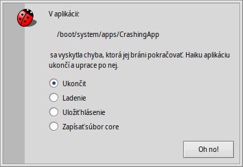

Ladiaci nástroj
| Panel: | ||
| Umiestnenie: | /boot/system/apps/Debugger | |
| Nastavenia: | ~/config/settings/Debugger settings ~/config/settings/Debugger/ |
Ladiaci nástroj je aplikácia, ktorú bežný užívateľ veľmi nevyužije. Je to určená pre vývojárov, aby mohli skúmať chyby v programoch. Niekedy majú tieto chyby za následok haváriu a pri nej aj koncoví používatelia prídu do styku s ladiacim nástrojom. Keď program havaruje, uvidíte toto upozornenie:
Dáva vám tri možnosti ako môžete na haváriu zareagovať:
po havarovanej aplikácii uprace, ale nič iné nerobí.
spustí ladiaci nástroj a umožní ďalšie vyšetrenie problému.
vytvorí hlásenie o chybe, ktoré sa uloží ako textový súbor na Ploche a je možné ho poslať emailom vývojárovi aplikácie, ktorá havarovala alebo prípadne pripojiť k hláseniu v nástroji na sledovanie chýb.
Hlásenie o chybe obsahuje informácie o vašom hardvéri (typ CPU a použitej pamäte atď.), presnú verziu Haiku a všetky dostupné informácie o stave systému, ktoré by mohli súvisieť s haváriou.creates a possibly huge dump of the system's state. Better attach a regular debug report first when submitting a bug report and only provide a core file on request.
The default action when a crash happens can be configured with a text file ~/config/settings/system/debug_server/settings.
The file takes on a driver_settings style format as follows:
default_action user
executable_actions {
app1 log
/path/app2* debug
}
Valid values for a default_action are:
| user | Prompt the user for action. | |
| kill | Silently terminate the crashing team. | |
| debug | Attach the debugger to the crashing team. | |
| log / report | Save a crash report and terminate the team. | |
| core | Save a (possibly very large) core file and terminate the team. |
If no default_action is specified, "user" is assumed.
The executable_actions subsection contains individual overrides of the default. These take the form above, where the individual lines can be only a team name, or a path, with wildcards.
Popis práce so samotným ladiacim nástrojom je mimo zameranie tohto sprievodcu, ktorý popisuje potreby bežného používateľa Haiku. Pre úplnosť, tu je okno, ktoré uvidíte ak vo vyššie uvedenom upozornení zvolíte možnosť :

As you'll quickly see when you start poking around a bit, the Debugger is one of the most complex and sophisticated applications for Haiku. If you're a developer and are used to graphical debuggers on other platforms, many features will be familiar to you.
Below are a few links that may shed some light on the intricacies of Haiku's Debugger. If you have a specific question, you may want to consider posting it on the development mailing list. If you find more useful resources, please file a bugreport with that info.
| Debugger Reference Manual | This is the most in-depth source on how to work with the Debugger. | |
| Príspevky na blogu | There are a few articles on the Debugger, mostly by Rene Gollent after implementing a new feature. | |
| Video z BeGeistert 026 | A video from the BeGeistert meeting in 2012, in which Ingo Weinhold demonstrates the state of the Debugger back then and shows other interesting tools like the profiler to hunt down bottlenecks. |